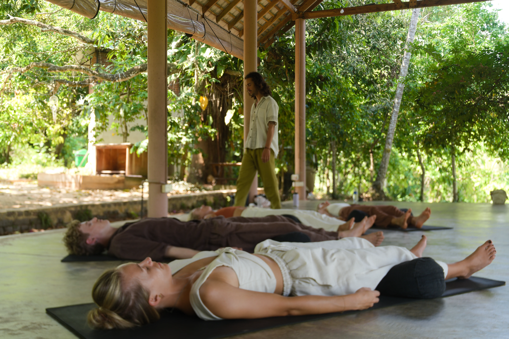
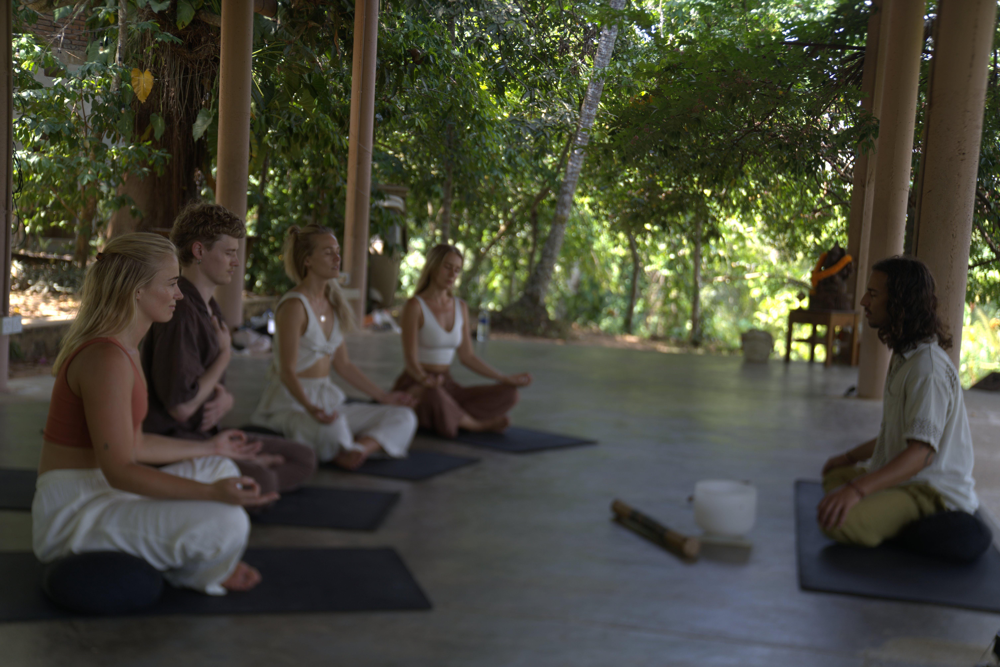

Respiración consciente para liberar tensión, recuperar claridad y volver a tu centro.

El breathwork es una práctica de respiración consciente que actúa directamente sobre el sistema nervioso. A través de patrones de respiración guiados, el cuerpo libera tensión acumulada, bloqueos emocionales y patrones que la mente sola no puede soltar.
No es meditación. No es yoga. Es movimiento interno. Algo se mueve desde dentro, sin que tengas que entender ni controlar nada.
Cada sesión es diferente. Lo que sale es lo que necesita salir.
Reservar una sesiónEl breathwork puede ayudarte si estás en alguno de estos momentos.
Sientes que cargas con algo que no consigues soltar, aunque no sepas exactamente qué es.
Hay emociones que se quedan atascadas y no encuentras cómo procesarlas.
Estás en un proceso de transformación y necesitas herramientas para acompañarlo.
Sientes que estás en piloto automático, lejos de ti, de tu cuerpo, de lo que importa.
Una sesión de breathwork conmigo tiene un ritmo claro. Sin prisas, sin poses.
Hablamos brevemente de cómo estás y qué traes. Preparamos el espacio juntos.
Entras en el patrón de respiración guiado. El cuerpo empieza a moverse desde dentro.
Espacio para soltar. El cuerpo hace lo que necesita: moverse, sentir, descansar.
Silencio y cierre. Si lo necesitas, compartimos lo que ha pasado.
Cada persona lo vive diferente. Lo más frecuente es:

El breathwork se adapta a tu momento y a lo que necesitas.
Sesión individual completamente personalizada. Trabajamos desde donde estás, a tu ritmo. La opción más profunda e íntima.
Reservar →Sesiones abiertas en Valencia. Respirar con otros tiene su propia energía — algo se amplifica cuando lo hacemos juntos.
Ver fechas →Para cuando la distancia no es excusa. La sesión 1:1 también funciona por videollamada con la misma profundidad.
Reservar →Sí, cuando está bien guiado. Hay contraindicaciones específicas como epilepsia, problemas cardiovasculares graves o embarazo. Si tienes dudas, consúltame antes.
No. El breathwork no requiere ninguna práctica previa. Es accesible para cualquiera que tenga disposición a respirar y a estar presente.
Puede haber sensaciones físicas como hormigueo o calor, emociones que suben, imágenes, o simplemente relajación profunda. No hay una experiencia correcta.
Ofrezco las dos modalidades. La individual es más personalizada e íntima. La grupal tiene su propia energía colectiva.
La sesión individual dura entre 75 y 90 minutos. Las grupales suelen ser de 2 horas incluyendo llegada e integración.
Escríbeme y buscamos el momento.
Escribir por WhatsApp